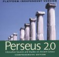

|
|
Perseus 2.0: Interactive Sources and Studies on Ancient Greece
- Enlarge
-
March 2000
ISBN: 0300080913
ISBN-13: 978-0-300-08091-9
-
Multimedia: $160.00 tx
- Related Categories
- Science
Literary Studies
Art and Architecture
Classics
|
Perseus 2.0: Interactive Sources and Studies on Ancient GreecePlatform-Independent Version, Concise Edition
Named for the Hellenic hero who explored the world’s most distant reaches, Perseus is the award-winning digital resource that is revolutionizing the study of ancient Greece. Now available for the first time for PCs and Windows-based computers, Perseus continues to expand the ways in which ancient Greek literature, history, art, and archaeology can be examined.
Perseus 2.0 is the most comprehensive collection of primary sources and supporting reference materials on ancient Greece ever created. It contains over 380 texts in Greek and in translation, representing all of the major authors of the classical period and others, extensive morphological tools, art and archaeology resources, and much more. Superb navigational tools and hypertextual links make searching the resource quick, intuitive, and effective. Widely praised as one of the most innovative education tools ever published, Perseus is an invaluable resource for anyone interested in exploring the ancient world.
System Requirements
Macintosh users:
PowerPC processor or later
Mac os system 8 or later
At least 5 mb of free ram; 10 mb preferred
3.5 mb of free space on hard disk
CD-ROM drive
Color monitor
Windows users:
Windows 95, 98, or NT™. (May run on Windows 3.x with Win32s.)
486 PCs and above
16 MB of total ram
4 MB of free space on hard disk
CD-ROM drive
SVGA or VGA monitor with 256 colors
Major funding is provided by the Annenberg/CPB Project with additional support from Apple Computer, Inc., and the National Endowment for the Arts, as well as the Packard Humanities Institute, Xerox Corporation, Boston University, Bowdoin College, and Harvard University.
Gregory Crane, editor–in–chief of the Perseus Project, is Winnick Family Chair in Technology and Entrepreneurship and professor of classics at Tufts University.
OTHER TITLES BY THIS AUTHOR
 
TOP
|